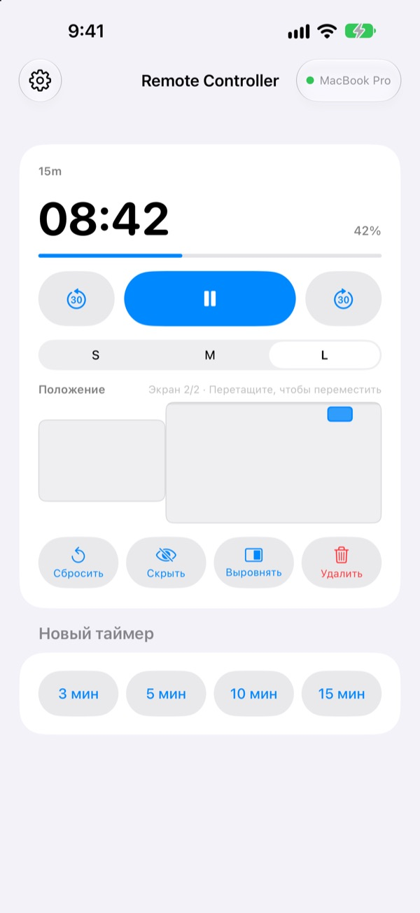
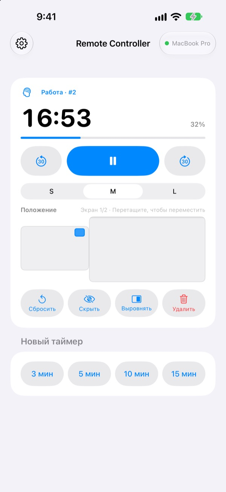
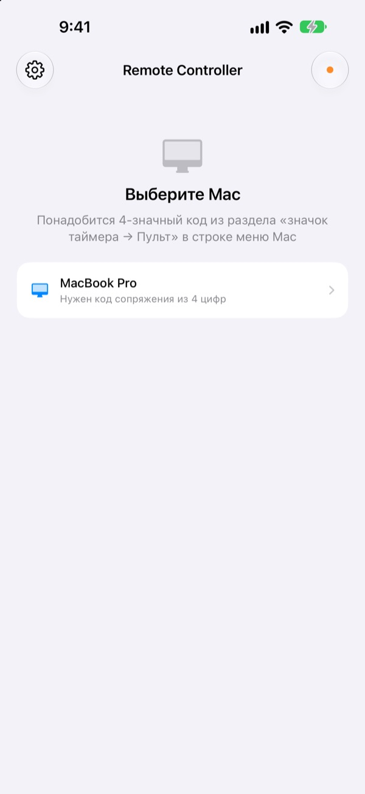

Mac остался позади,
а таймер у вас в руке
Управляйте таймерами StickyPresenter на Mac прямо с iPhone. Выйдите к залу и по-прежнему видите оставшееся время, ставите на паузу, добавляете 30 секунд или убираете таймер с графика, который он закрывает.
Бесплатно · iOS 17 или новее · Нужен Mac с запущенным StickyPresenter в той же сети Wi‑Fi.

Всё ещё идёте к ноутбуку, чтобы тронуть таймер?
Выступление затянулось, и нужно больше времени. Таймер висит прямо поверх вашего лучшего графика. До сих пор это значило пройти через сцену и тянуться к трекпаду на глазах у всех. С Remote Controller вы остаётесь на месте и один раз касаетесь iPhone.
Видите, сколько осталось, и сразу это правите
Оставшееся время и прогресс обновляются каждую секунду. В режиме помидора видно, идёт ли «Работа» или «Перерыв» и какой по счёту цикл.
Затянули? Добавьте 30 секунд. Заканчиваете раньше? Уберите 30. Новый таймер на 3, 5, 10 или 15 минут запускается одним касанием, а размер виджета переключается между S, M и L, чтобы его читали и с последнего ряда.

Код вводится один раз, и всё
Откройте приложение, и в списке появятся все Mac в вашей сети Wi‑Fi с запущенным StickyPresenter. Выберите свой и введите четырёхзначный код из раздела «значок таймера ▸ Пульт» в строке меню Mac.
Дальше приложение само подключается к этому Mac при каждом запуске. Ни аккаунта, ни сервера: устройства общаются напрямую по локальной сети.

Три шага до начала работы
- 1
Откройте StickyPresenter на Mac
Если в строке меню виден значок таймера, всё готово. Приложение остаётся там, даже если закрыть все окна.
- 2
Откройте приложение в той же сети Wi‑Fi
Когда оно запросит доступ к локальной сети, нажмите «Разрешить». Так оно найдёт ваш Mac.
- 3
Выберите Mac и введите код
Введите четырёхзначный код сопряжения из раздела «значок таймера ▸ Пульт» в строке меню Mac, и таймер в ваших руках.
Что можно делать с iPhone
- Осталось времени
- Оставшееся время, прогресс, фаза помидора («Работа» или «Перерыв») и номер цикла, каждую секунду
- Старт · Пауза
- Одна большая кнопка в центре
- −30 с · +30 с
- Кнопки по бокам сразу правят идущий таймер
- Новый таймер
- 3, 5, 10 или 15 минут
- Размер виджета
- Виджет S, M или L
- Положение
- Перетаскивайте виджет на уменьшенной схеме экранов Mac, даже на второй дисплей
- Скрыть
- Ненадолго спрячьте виджет от зрителей
- Выровнять
- Верните потерявшийся виджет к окну таймера
- Сбросить · Удалить
- Запустите таймер заново или удалите его
- Команды · Siri
- Скажите
Запустить таймер с Remote Controller, и на Mac появится таймер
Пульт работает только с таймерами, запущенными на Mac. Заметки и тексты для телесуфлёра никогда не отправляются на iPhone, а листать слайды пульт не умеет.
Вопросы
Можно ли пользоваться приложением на iPhone без Mac?
Нет. Remote Controller служит пультом для StickyPresenter на Mac, поэтому StickyPresenter должен работать на Mac в той же сети Wi‑Fi. Приложение для Mac можно скачать по ссылке ниже или через «Скачать приложение для Mac» в настройках приложения.
Моего Mac нет в списке.
Если за 10 секунд ни один Mac не появился, приложение покажет список проверок. Пройдите его сверху вниз: StickyPresenter запущен на Mac (в строке меню есть значок таймера), оба устройства в одной сети Wi‑Fi (гостевая сеть не подойдёт), Remote Controller включён на iPhone в разделе «Настройки» ▸ «Конфиденциальность и безопасность» ▸ «Локальная сеть», StickyPresenter разрешён на Mac в разделе «Системные настройки» ▸ «Конфиденциальность и безопасность» ▸ «Локальная сеть», а VPN выключен.
Пишет, что код сопряжения неверный.
Введите четыре цифры, которые сейчас показаны в разделе «значок таймера ▸ Пульт» в строке меню Mac. Если на Mac нажимали «Новый код сопряжения», подойдёт только новый код.
Пишет, что Mac больше не помнит этот iPhone.
Так бывает после команды «Забыть сопряжённые пульты» на Mac или после переустановки StickyPresenter. Коснитесь Mac в списке и введите код сопряжения ещё раз.
Пишет, что Mac не отвечает.
Проверьте, что Mac не в режиме сна, оба устройства в одной сети Wi‑Fi, а VPN выключен.
Пишет, что нужно обновить приложение на Mac.
StickyPresenter на Mac старше, чем пульт. Обновите его через Mac App Store и снова выберите Mac в списке.
Это безопасно в переговорной, где много Mac?
Да. Пульт общается только с тем Mac, с которым сопряжён, а пульт, не знающий вашего кода, до вашего Mac не достучится. Все данные идут по зашифрованному прямому соединению внутри одной сети. Если вы когда-нибудь показывали код посторонним, нажмите на Mac «Новый код сопряжения».
Что уходит в интернет?
Таймеры и команды не покидают локальную сеть. В интернет отправляются только анонимная статистика использования, отчёты о сбоях и отзывы, которые вы решили отправить. Подробности в политике конфиденциальности.
Может ли Siri запустить таймер прямо перед выходом на сцену?
Да. Скажите «Запустить таймер с Remote Controller» или используйте действие «Запустить таймер на Mac» в приложении «Команды». Приложение откроется и запустит таймер нужной длины (от 1 до 600 минут), как только подключится к Mac.
Вопросы, ошибки или идеи? Пишите на mizzking75@gmail.com или отправьте прямо с iPhone: шестерёнка слева вверху в приложении ▸ «Отправить отзыв».